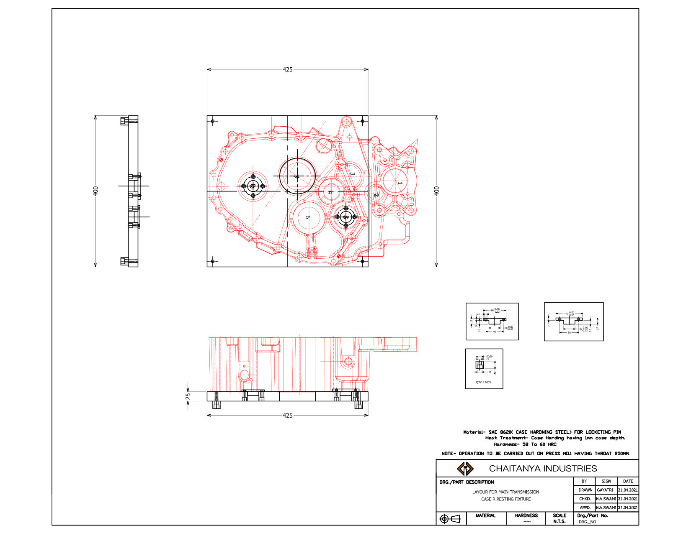
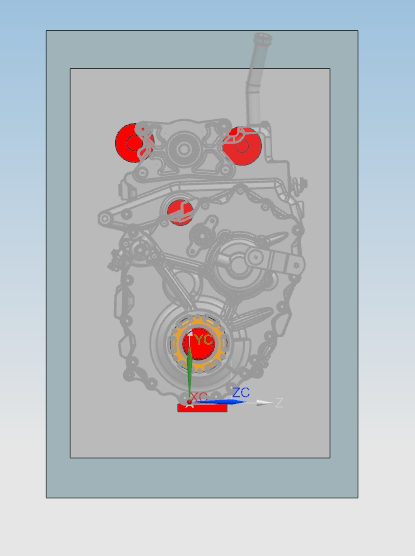
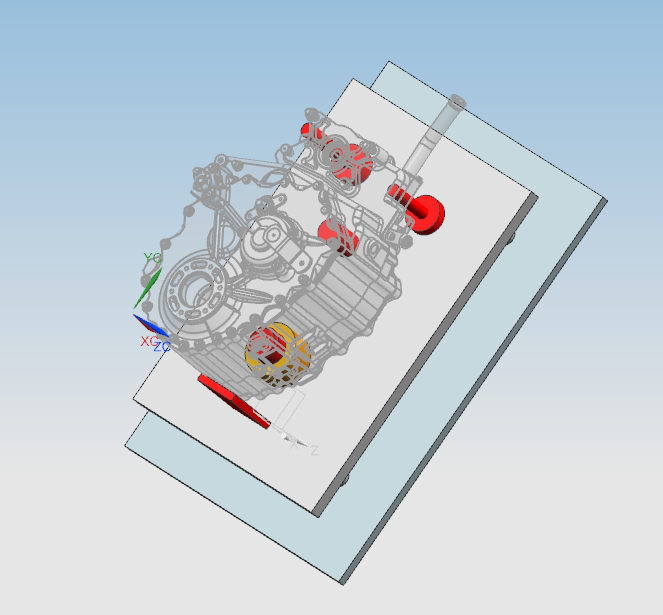
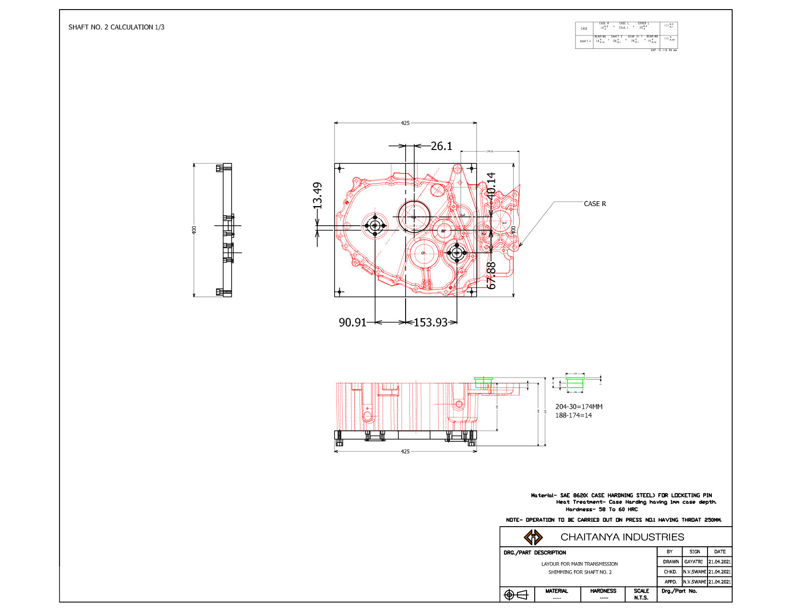
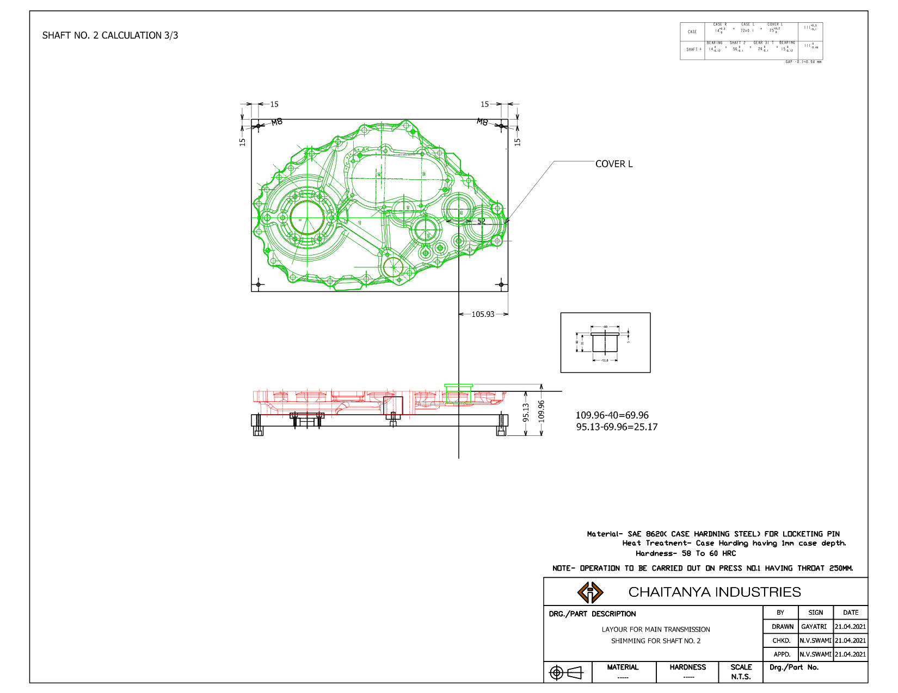
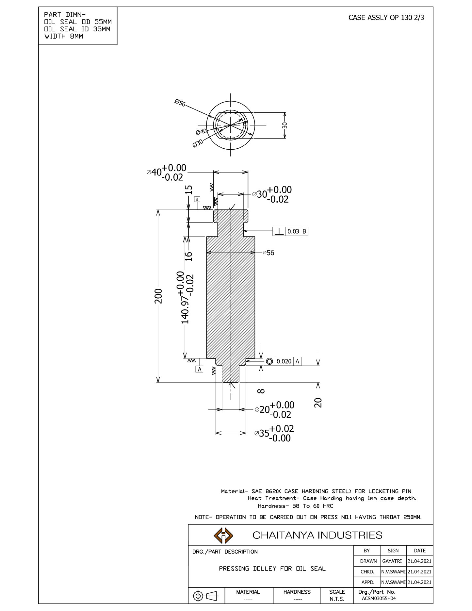

Transmission case resting & shimming fixtures
A family of press-line fixtures for the main transmission: resting fixtures for case R, case L and a common cover L/R, shim-calculation layouts for each shaft, and a precision oil-seal pressing dolly for assembly operation OP 130.

The challenge
Transmission cases and covers were assembled on a hydraulic press. Bearings and seals had to be pressed square, and each shaft needed the right shim stack to set end-play. Without dedicated fixtures, parts were located by hand, operators set up again for every variant, and shim selection was slow and inconsistent.
Goal: Locate each casting positively on the press, make shim selection a quick calculation instead of trial-and-error, and press seals square every time.
Fixture family
Resting fixtures, case R & case L
Flat base plates (e.g. 425 × 400 mm) with hardened locating pins and rest pads placed from the casting's own datum bores, so the case sits the same way every time.
Common fixture for cover L & R
One 550 × 378 mm plate that locates both covers with shared pin positions, cutting fixture count and changeover time.
Shimming layouts, shafts 2–5
For each shaft, a layout that turns measured bearing-seat heights on the case and cover into a direct shim size (e.g. 109.96 − 40 = 69.96; 95.13 − 69.96 = 25.17 mm).
Oil-seal pressing dolly (OP 130)
Stepped, case-hardened dolly for a 55 × 35 × 8 mm oil seal, with 0.02 mm diameter tolerances, 0.020 runout and 0.03 perpendicularity so the seal goes in square.
Press-line constraints
Every fixture is sized for Press No. 1's 250 mm throat and specified for heat treatment so it holds up in production.
Layouts & 3D





OP 130 pressing dolly

| Seal | OD 55 · ID 35 · width 8 mm |
|---|---|
| Overall length | 200 mm |
| Critical Ø | Ø40 +0.00/−0.02 · Ø30 +0.00/−0.02 · Ø20 +0.00/−0.02 · Ø35 +0.02/−0.00 |
| GD&T | Runout 0.020 to A · perpendicularity 0.03 to B |
| Material | SAE 8620 case-hardening steel |
| Heat treat | Case hardened, 1 mm case depth, 58–60 HRC |
| Press | Press No. 1, 250 mm throat |
Results
Production cycle time across the custom powertrain tooling and fixture program
Cover L and R share one common resting fixture
Shafts with defined shim-calculation layouts (shafts 2–5)